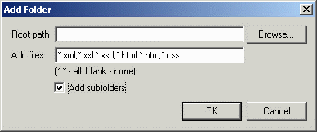

To add an existing folder to your project, click on Project > Add Folders. You will see a dialog box popup in which you will be able to select the given folders. Click Browse to select the folder which you would like to add. Check Add Subfolders if you want to add all the subfolders contained in that folder. You can also specify a filter for the files which you would like to add. A (*.*) filter will add all files, but if you leave it blank, no files will be added.
Below is a screenshot of the Add Folder dialog:
